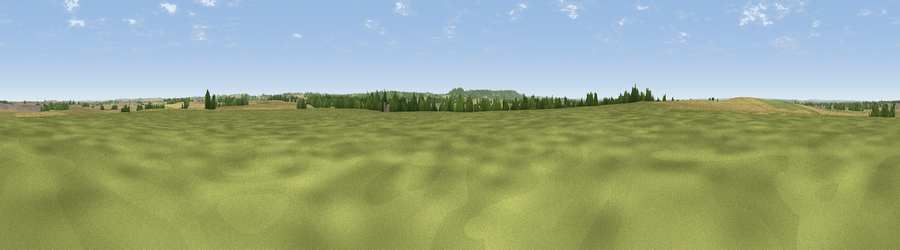

Viewpoint near Easthorpe
#30551 in England · top 47% of its area beats it · near EasthorpeThe view, rendered

A 360° render of this exact spot computed from the terrain model, tree cover and land cover — summer colours, afternoon light, calibrated against photographs of famous viewpoints. Real trees, hedges and buildings will differ in detail.
The panorama
Grey silhouette: terrain skyline in each direction (720 bearings, Earth curvature and refraction included). Dashed green: skyline with trees (+15 m) and buildings (+8 m) as obstacles. Blue strip: how far the ground is visible on each bearing.
Where the view opens
Wedge length = distance to the farthest visible ground on that bearing (vegetation-aware). Rings at 10, 25 and 50 km.
What fills the view
45% cropland · 42% grassland · 11% woodland · 2% built-up
Angular shares of the visible panorama (visual magnitude), not map area. Landscape diversity 0.45 (0–1 Shannon).
Key numbers
More beautiful places nearby
The staircase of upgrades: each row has a higher view potential than everything closer. Driving times are estimates from straight-line distance, calibrated against real road routing — check an actual route before setting out.
| Place | Direction | Drive | Score |
|---|---|---|---|
| Beacon Hill | WNW · 1 km | ~3 min | 51.8 |
| Viewpoint near Belvoir | S · 5 km | ~12 min | 70.8 |
| Viewpoint near Woodhouse Eaves | SW · 39 km | ~59 min | 77.7 |
| Viewpoint near Mow Cop | WNW · 98 km | ~122 min | 78.9 |
| Viewpoint near Mow Cop | W · 98 km | ~122 min | 80.2 |
| Viewpoint near Little Wenlock | WSW · 122 km | ~147 min | 84.2 |
| The Wrekin | WSW · 123 km | ~147 min | 85.0 |
| Viewpoint near Little Wenlock | WSW · 123 km | ~147 min | 86.6 |
52.94344, -0.77857 · source: osm peak · position refined by local search. Computed location — check access rights before visiting.